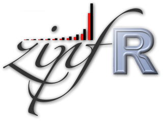

zipfR: user-friendly LNRE modelling in R |

current version: 0.6-5 (November 2008) — now on R-Forge |
The zipfR package implements “Large Number of Rare Events” (LNRE) models for type-token statistics on word frequencies and other type-rich distributions, whether linguistic or non-linguistic. It provides utilities for various kinds of analyses commonly used in lexical statistics, such as the extrapolation of vocabulary growth curves and frequency estimation for rare events, building on the powerful R environment for statistical computing.
Like R, zipfR is free and open source.
A few examples of application areas where the zipfR functionalities can be useful:
zipfR is being developed by Stefan Evert and Marco Baroni.
If you publish work based on zipfR, please quote this page and/or one of the following papers:
Source code and binary versions of the zipfR package can conveniently be downloaded from CRAN, the Comprehensive R Archive Network, using R's built-in package manager. If you need help with installation from CRAN, please take a look at the zipfR tutorial available from the Getting started section.
Nightly builds of the cutting-edge version are available from the R-Forge repository. Note that these development builds may occasionally be buggy or unstable, so you should only use them if you feel comfortable as a beta tester (and it is highly recommended that you join the zipfR mailing list in this case). To install the cutting-edge version of zipfR, enter the R command
install.packages("zipfR", repos="http://R-Forge.R-project.org")
or point your GUI package installer to the R-Forge repository at http://R-Forge.R-project.org/.
The best way to get started with zipfR is to install it and work your way through the tutorial.
Download the current version of the tutorial now!
When you have finished the tutorial, you should browse the comprehensive package documentation to find out more about its functionalities. If you want to learn more about the motivation behind zipfR, the math and some applications, we recommend that you take a look at the materials from our ESSLLI course Counting Words. The papers listed in the Background reading section below may also be of interest to you.
PDF version of the package documentation (version 0.6-5)
zipfR accepts several input formats, including simple frequency lists and plain samples in one-token-per-line format. Thus, it should be easy to extract suitable input data using standard corpus processing tools.
However, we also provide two Perl pre-processing scripts that might be useful for certain studies:
compute_emp_vgc.pl: This script takes a corpus in one-token-per-line format and computes its observed vocabulary and hapax growth curves (observed growth curves cannot be generated from frequency lists, since they require information on the ordering of the tokens in the input). Note that the Perl script is more efficient for large corpora than the built-in zipfR functions.
randomization_experiments.pl: This script takes a CWB-encoded corpus as input and computes spectra and vocabulary growth curves for multiple randomizations of arbitrary text segments (e.g. sentences or documents). The script is meant for rather advanced tests of the randomness assumption lying behind LNRE modeling and for handling large corpora. Most users will have no use for it.
At ESSLLI '06 we taught an introductory course on lexical statistics entitled Counting Words. Besides giving a basic overview of the methodology of lexical statistics and its applications, we described (part of) the mathematical theory underlying the zipfR package and demonstrated its usage. In a practical session, participants were able to perform their own analyses with a beta release of zipfR (version 0.5-0).
You can download the class materials using the links below (the “slides” version makes for better on-screen reading, while the “handout” version is more suitable for printing):
We would love to hear from you: feedback, feature requests, offers to collaborate on the development of the toolkit, invitations, money, … ;-)
Stefan Evert (Institute of Cognitive Science, University of Osnabrück):
stefan evert AT uos de | http://purl.org/stefan.evert/
Marco Baroni (CIMeC, University of Trento):
marco baroni AT unitn it | http://clic.cimec.unitn.it/marco/
A mailing list for zipfR users is currently being set up.
H. Baayen (2001). Word frequency distributions. Kluwer, Dordrecht (the companion LEXSTATS toolkit for LNRE analysis is available here).
M. Baroni (2008). Distributions in text. In Anke Lüdeling and Merja Kytö (eds.), Corpus Linguistics: An International Handbook. Berlin: Mouton de Gruyter.
S. Evert (2004a). A simple LNRE model for random character sequences. In Proceedings of JADT 2004, 411-422.
S. Evert (2004b, published 2005). The statistics of word cooccurrences: Word pairs and collocations. Ph.D. thesis, Institut für maschinelle Sprachverarbeitung, University of Stuttgart.
S. Evert and M. Baroni (2006a). Testing the extrapolation quality of word frequency models. In Proceedings of Corpus Linguistics 2005, Birmingham, UK.
S. Evert and M. Baroni (2006b). The zipfR library: Words and other rare events in R. Presentation at useR! 2006: The Second R User Conference, Vienna, Austria.
Baroni, Marco and Evert, Stefan (2007). Words and echoes: Assessing and mitigating the non-randomness problem in word frequency distribution modeling. In Proceedings of the 45th Annual Meeting of the Association for Computational Linguistics, Prague, Czech Republic.
Evert, Stefan and Baroni, Marco (2007). zipfR: Word frequency distributions in R. In Proceedings of the 45th Annual Meeting of the Association for Computational Linguistics, Posters and Demonstrations Session, Prague, Czech Republic. [poster]
Whenever possible, you should use the most recent version of the zipfR package from CRAN or R-Forge (see installation instructions). Here, we provide source code packages of old versions as a fallback in case there are any incompatibilities with legacy platforms or existing R scripts.